4．格拉斯曼的扩张的演算
正当哈密顿建立他的四元数时，另一个数学家格拉斯曼（Hermann Günther Grassmann，1809—1877），正在建立复数的一个更为大胆的推广。他在年轻时没有表现出数学才能，并且没有受过大学的数学教育，但是后来成了德国斯德丁（Stettin）城的中学数学教师，同时又是梵文权威。格拉斯曼在哈密顿以前就有了他的想法，但直到1844年，即哈密顿宣告他的四元数的发现后一年才发表。那一年他发表了他的《线性扩张论》（Die lineale Ausdehnungslehre）。由于覆上了神秘的教义以及叙述抽象，比较关心实践的数学家和物理学家发现此书含混不清和不好读，结果这本著作虽然高度独创，但很多年仍然很少为人知道。1862年格拉斯曼发行了修订版，称作《扩张论》（Die Ausdehnungslehre）。书中，他简化和详述了原来的工作，但他的文风和有欠清楚明了仍使读者厌恶。
虽然格拉斯曼的叙述和几何概念有着几乎不可分割的联系———他实际上是在涉及n维几何———但我们将抽取其代数的概念，它被证明是具有永恒的价值。他的基本概念，他称为扩张的量（extensive Grösse），是一种有n个分量的超复数。为研究他的思想，我们讨论n＝3的情况。
考虑两个超复数
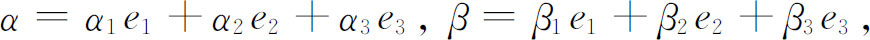
这里αi和βi是实数，而e1，e2和e3是原始的或定性的单元，几何上用单位长度的三个有向线段来代表，它们从原点出发，顺序确定一个右手直角坐标系。这些αiei是原始单元的倍数，且几何上由相应轴上长度αi来代表，而α由空间中的一个有向线段来代表，它在各轴上的投影正好是长度αi。同样的事对βi和β也成立。格拉斯曼称这样的有向线段或线向量为Strecke（线段）。
这些超复数的加减法由下式定义：
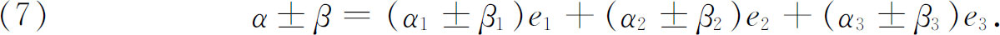
格拉斯曼引进了两类乘法，内积和外积。对内积，他假设
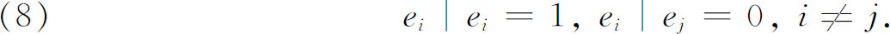
对外积他假设
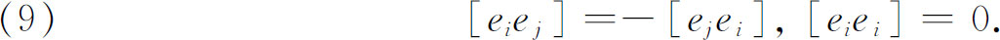
这些方括弧称为二阶单元，它们未被格拉斯曼化简成一阶单元，即ei（而哈密顿做了），而是用［e1e2 ］＝e3等把它们当作好像是等价于一阶单元来处理。
从这些定义推出α和β的内积α｜β由下式给定：
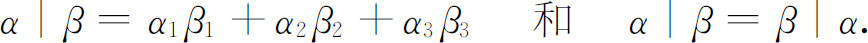
一个超复数α的数值或大小a定义为
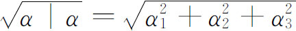
．这样，α的大小在数值上就等于几何上表示它的线向量的长度。若θ表示线向量α和β之间的夹角，则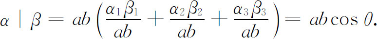
借助于外积规则（9），超复数α和β的外积P可以表示为
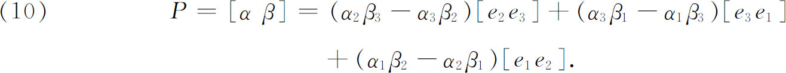
这个积是二阶的超复数，并且是用二阶的独立的单元表示出来的。它的大小｜P｜是借助于两个二阶超复数的内积的定义得到的，就是
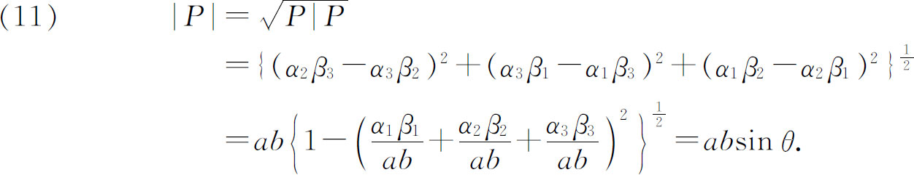
因此，外积［αβ］的大小｜P｜就在几何上被表示成一个平行四边形的面积，这个平行四边形是由几何上代表α和β的线向量构成的。这个面积，连同和它垂直的一个单位线向量一起，就是现在所称的向量面积，那个单位线向量的方向要选择成当α绕此线向量转到β时，它的方向将指向从α转到β的右手螺旋方向。格拉斯曼的术语是Plangrösse（平面量）。
两个初始的三维超复数的格拉斯曼内积等价于两个向量的哈密顿的四元数乘积的数量部分的负值；在三维情况下，当我们用e1代替［e2e3 ］等，格拉斯曼外积就正好是两个向量的哈密顿的四元数乘积。然而，在四元数理论中，向量是四元数的辅助部分，而在格拉斯曼代数中向量是作为基本的量出现的。
格拉斯曼的另外一种乘积是这样形成的，将一个超复数γ同两个超复数α和β的外积［αβ］作内积，这个积在三维的情形是
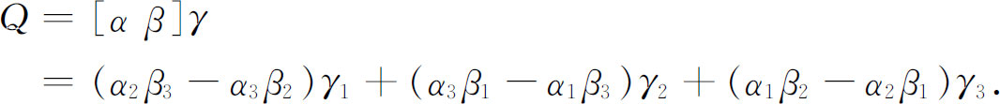
表示成行列式形状就是
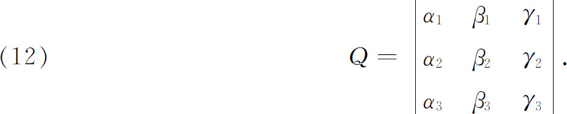
结果，Q能够几何地解释成由α，β和γ的线向量构成的平行六面体的体积。这个体积可正可负。
格拉斯曼不仅考虑了（对n分量超复数）上面所说的两种乘积，而且还考虑了高阶乘积。在1855年的一篇文章(13)中，他对超复数给出了16种不同类型的乘积。他还给出了这些乘积的几何意义，并对力学、磁学、晶体学作了应用。
初看起来，格拉斯曼关于有n个部分的超复数的讨论似乎是不必要的一般，因为至少到目前为止超复数的有用的例子最多包含四个部分。可是格拉斯曼的思想却有助于引导数学家们进入张量理论（第48章），因为正如我们将要看到的，张量就是超复数。其他几何的和不变性的概念在张量来到以前就已闻名于数学界了。虽然关于超复数的思想引向了各种推广，但格拉斯曼的n维超复数的分析（例如微积分）终究未建立起来。理由是简单的，即没有发现这样的分析的应用。正如我们将要看到的，对张量有一个扩张的分析，但是这些在黎曼几何中有它们的来源。